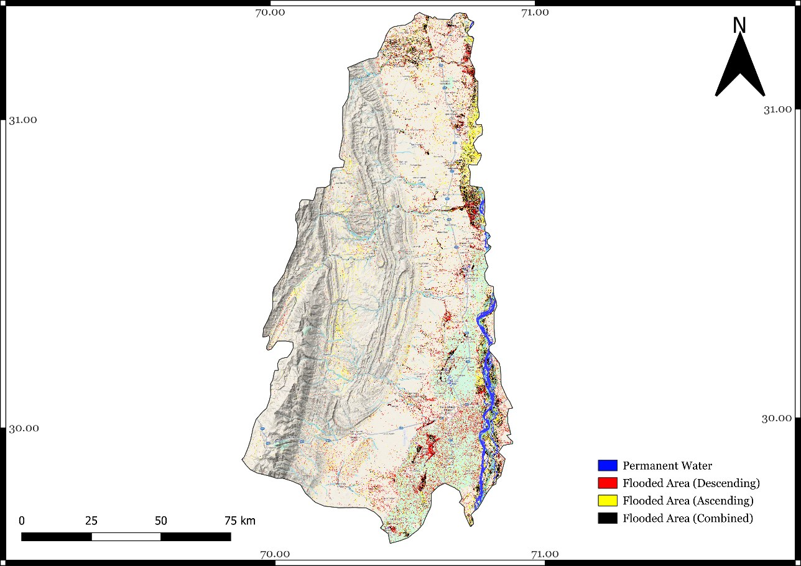
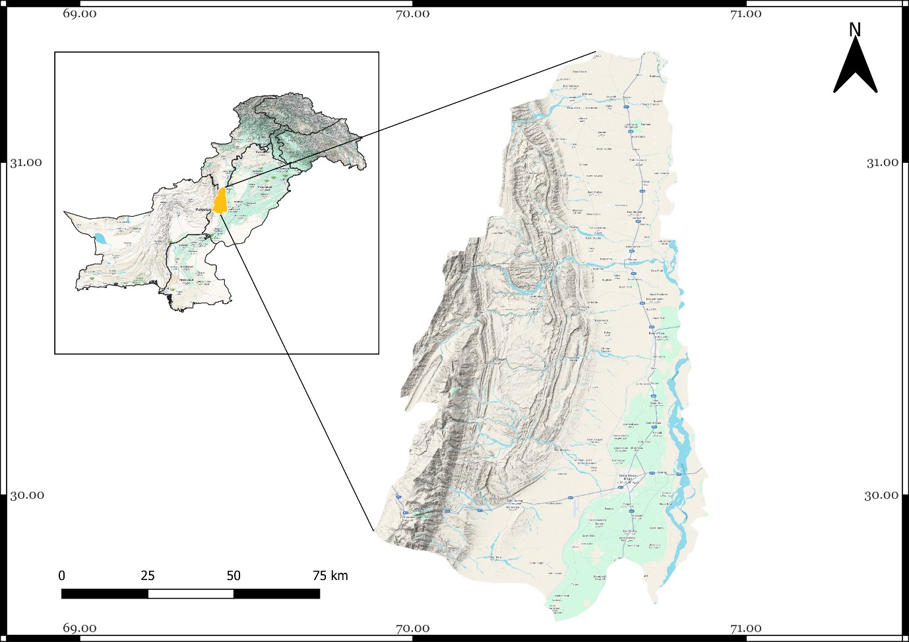
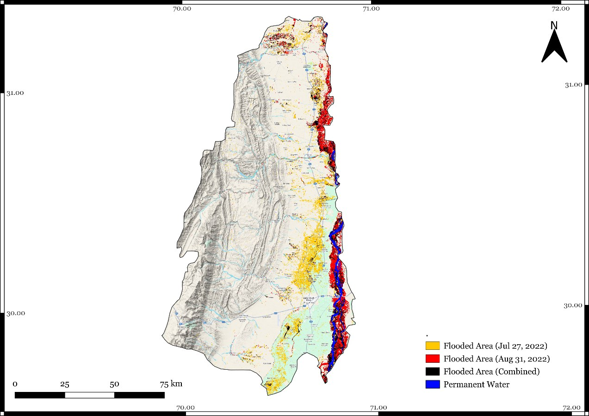
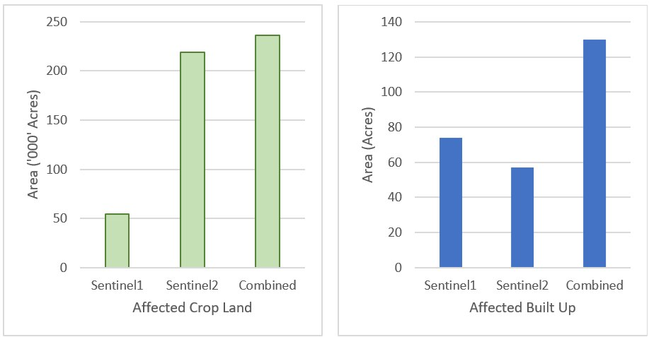

Multi-Sensor Flood Mapping and Land-Cover Exposure Assessment
Combining Sentinel-1 SAR and Sentinel-2 optical observations to characterize inundation and exposed agricultural / built-up land during the 2022 D.G. Khan flood event.
← Back to ProjectsProject Overview
This conference project used multi-temporal Sentinel-1 SAR and Sentinel-2 optical imagery in Google Earth Engine to map inundation during the 2022 D.G. Khan floods. The event was challenging because flash flooding from the Koh-e-Suleman hill torrents evolved rapidly, while optical observations were additionally constrained by monsoon cloud cover.
The workflow applied Sentinel-1 before / after change detection, terrain and permanent-water filtering, and Sentinel-2 MNDWI-based water mapping. Detected flood areas were intersected with ESA WorldCover to estimate cropland and built-up land exposed to the mapped inundation.

Approach
Flood Observations

Rather than treating the different sensor results as a formal accuracy improvement, I now interpret them as complementary observations of a rapidly evolving event: sensor type, cloud conditions and acquisition timing affected which areas were observed as inundated.
Land-Cover Exposure

Conference Output
Mapping Flood Extent and Damage Assessment using Google Earth Engine was presented at the International Conference on Geo-Informatics for Water and Agricultural Resource Management, University of Agriculture Faisalabad, 21–23 February 2024, and was included in the printed conference abstract book.